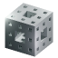

fractal-fish
About
fractal-fish is an open-source project to provide tutorials, code, and runnable web programs for a variety of fractals.
Source Code
The simulations on fractal-fish were created using the Godot game engine (stable version 3.5) and are hosted through the GitHub Pages service. All of the code is available on my github profile under the MIT license.